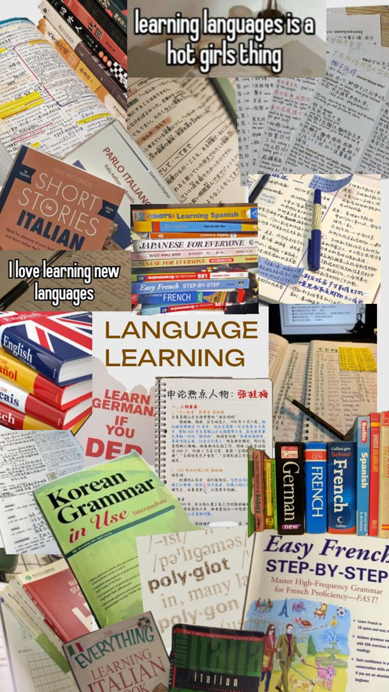

أهم 10 نصائح لنجاح التعلم عبر الإنترنت
انطلق في رحلتك المهنية نحو عالم الإرشاد السياحي مع برنامج تدريبي شامل يأخذك من الأساسيات إلى التميز، مصمم خصيصًا ليؤهلك لتصبح مرشدًا سياحيًا محترفًا؛ تتعلم فيه كل ما يلزمك من مهارات التواصل الفعّال، بناء المسارات والجولات السياحية، التعامل مع المجموعات والسياح من مختلف الثقافات، استخدام أساليب العرض الجذابة، والاستعداد لمواقف الحياة الواقعية خلال الجولات، مع تدريبات عملية وشهادات معتمدة تفتح لك أبواب العمل في شركات السياحة والرحلات محليًا ودوليًا
النقاط الرئيسية:
- فهم دور ومسؤوليات المرشد السياحي
- التعرف على أنواع السياحة (ثقافية – بيئية – ترفيهية – دينية...)
- التعرف على المكونات الأساسية للقطاع السياحي
- إتقان مهارات التحدث أمام الجمهور
- إتقان مهارات التحدث أمام الجمهور
أنشئ مكانًا مخصصًا للدراسة
لأنها ليست مجرد دورة نظرية، بل تجربة متكاملة تهدف إلى تأهيلك مهنيًا وشخصيًا لتصبح مرشدًا سياحيًا محترفًا في واحد من أكثر المجالات متعة وطلبًا في سوق العمل. ستأخذك هذه الدورة في رحلة تعليمية تبدأ من الصفر وتمنحك: محليًا ودوليًا
- منهج شامل ومحدث يغطي جميع جوانب الإرشاد السياحي.
- تدريب عملي واقعي يُحاكي المواقف اليومية التي يواجهها المرشدون السياحيون.
- إشراف من مدربين خبراء في المجال السياحي المحلي والدولي.
- شهادة معتمدة تعزز فرصك المهنية لدى شركات السياحة والسفر.
- مرونة في التعلم من خلال محتوى رقمي، ومحاضرات مباشرة ومسجلة.
ابق منظمًا
المبتدئين تمامًا الذين ليست لديهم أي خلفية أو خبرة سابقة في السياحة أو الفندقة، ويرغبون في بدء مسيرة مهنية في هذا القطاع المتنامي. تعليمية تبدأ من الصفر وتمنحك: محليًا ودوليًا
- حديثي التخرج من تخصصات غير سياحية أو فندقية، ويريدون التحول المهني نحو مجال مليء بالفرص محليًا ودوليًا.
- الباحثين عن عمل الذين يسعون لاكتساب مهارات عملية تؤهلهم للالتحاق بوظائف في الفنادق، شركات السياحة، أو مكاتب السفر.
- الأشخاص من خلفيات إدارية أو مكتبية ممن يرغبون في دخول مجال الضيافة وتعلم قواعد التعامل مع السياح والنزلاء.